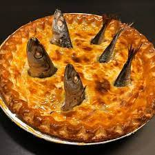

Pie of Fish Recipe

Woah, look at this beautiful stargazy we have here! It's a unique Cornish pie for everyone to enjoy!
However, you might actually suffer after eating it if you're not Cornish.
Ingredients:
- Fish heads
- Fish tails
- Pie (preferrably not too sweet)
Steps
- Stick fish heads into a pie
- Stick fish tails into a pie
- If you can't stick anything into a pie, first make holes (not too deep)
- Okay, hopefully you have managed to stick the stuff into the pie
- Now eat
- All of it. Immediately
Back to Home